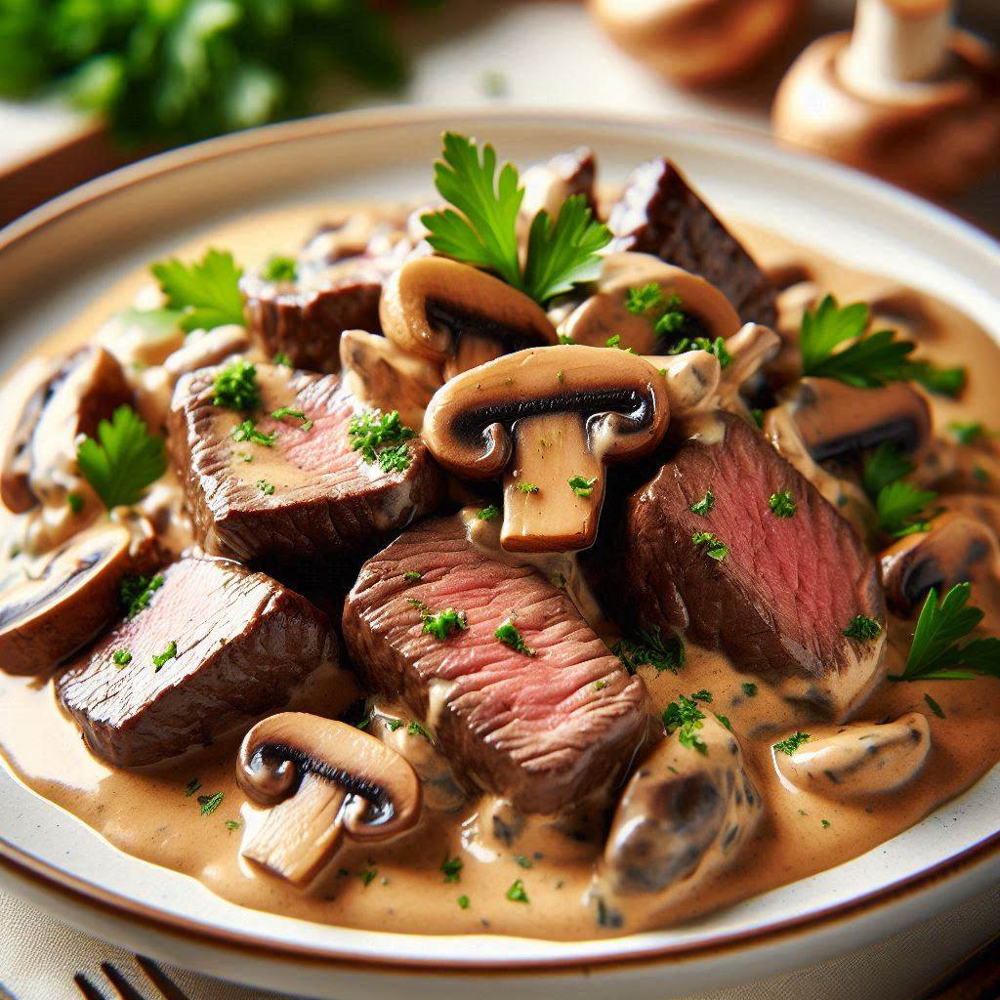

Beef Stroganoff

Desctiption
Ingredients
- 12 lasagna noodles
- 1 lb (450g) ground beef
- 1 onion, finely chopped
- 2 cloves garlic, minced
- 1 (24 oz) jar marinara sauce
- 2 cups ricotta cheese
- 1/2 cup grated Parmesan cheese
- 1 large egg
- 2 tablespoons fresh parsley, chopped
- 4 cups shredded mozzarella cheese
- Salt and pepper to taste
Step by Step
- Preheat your oven to 375°F (190°C).
- Cook the lasagna noodles according to the package instructions. Drain and set aside.
- In a large skillet, cook the ground beef over medium heat until browned. Add the chopped onion and minced garlic, cooking until the onion is translucent.
- Stir in the marinara sauce and bring to a simmer. Season with salt and pepper to taste. Remove from heat.
- In a medium bowl, combine the ricotta cheese, grated Parmesan cheese, egg, and chopped parsley. Mix well.
- Spread a thin layer of the meat sauce on the bottom of a 9x13 inch baking dish.
- Place a layer of lasagna noodles over the sauce.
- Spread a layer of the ricotta mixture over the noodles.
- Sprinkle a layer of shredded mozzarella cheese over the ricotta mixture.
- Repeat layers, ending with a final layer of meat sauce and a generous topping of mozzarella cheese.
- Cover the baking dish with aluminum foil and bake in the preheated oven for 25 minutes.
- Remove the foil and bake for an additional 25 minutes, or until the cheese is bubbly and golden brown.
- Allow the lasagna to rest for 10-15 minutes before serving.